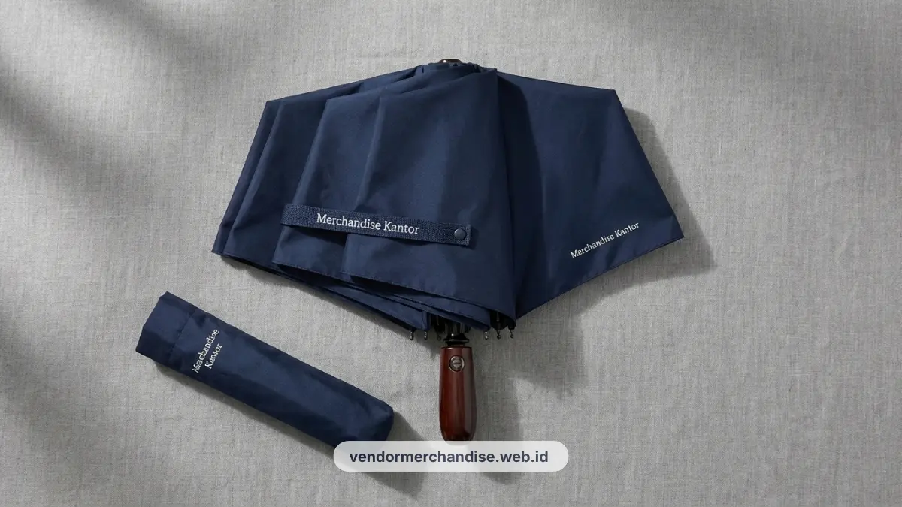

Payung lipat custom branding logo perusahaan adalah merchandise outdoor yang mencetak logo pada permukaan payung sehingga terlihat oleh banyak orang setiap kali dipakai di luar ruangan. Vendor Merchandise Kantor menyediakan payung lipat dengan berbagai ukuran dan area cetak logo.
Kenapa Payung Efektif sebagai Media Branding Berjalan
Payung custom logo efektif sebagai media branding berjalan karena setiap kali dipakai di ruang publik, logo perusahaan otomatis terlihat oleh orang-orang di sekitar pengguna. Efek ini menjadikan payung sebagai salah satu merchandise dengan rasio eksposur brand yang tinggi dibandingkan biaya produksinya.
Berbeda dengan merchandise yang hanya dipakai di dalam ruangan, payung digunakan justru saat cuaca ekstrem seperti hujan, momen ketika perhatian orang di jalan maupun area publik cenderung lebih tinggi terhadap benda yang menonjol secara visual.
Hal ini membuat payung custom logo cocok digunakan oleh klien lapangan maupun sales korporat yang sering berpindah lokasi kerja.
Payung juga memiliki usia pakai yang panjang bila menggunakan material berkualitas, sehingga branding yang tercetak dapat terus terlihat dalam jangka waktu lama tanpa biaya produksi berulang.
Ukuran dan Mekanisme yang Direkomendasikan
Payung lipat tiga dengan mekanisme buka tutup otomatis merupakan ukuran yang paling direkomendasikan untuk kebutuhan merchandise korporat karena praktis dibawa dan mudah digunakan dalam kondisi mendesak.
Diameter payung berkisar antara 95 cm hingga 105 cm umumnya dianggap ideal untuk kebutuhan perlindungan pribadi sekaligus tampilan branding yang cukup luas.

Untuk kebutuhan sales lapangan yang sering berpindah tempat, payung lipat otomatis dengan rangka fiber lebih disarankan karena lebih tahan terhadap angin dibandingkan rangka besi biasa.
Sementara untuk gift set relasi bisnis, payung lipat manual dengan desain lebih ringkas juga dapat menjadi pilihan yang tetap elegan.
Area Cetak Logo Optimal
Area cetak logo yang paling optimal pada payung lipat berada di dua hingga empat panel yang langsung terlihat saat payung terbuka penuh, biasanya di bagian panel depan dan samping. Penempatan ini memastikan logo tetap terbaca jelas dari berbagai sudut pandang.
Selain pada panel kain, area cetak logo tambahan juga dapat ditempatkan pada bagian gagang atau strap pengikat payung untuk memperkuat identitas brand meski dalam kondisi terlipat.
Kombinasi penempatan logo di panel utama dan aksesori payung membuat branding tetap konsisten baik saat payung terbuka maupun tertutup.
Tips Perawatan
Payung custom logo sebaiknya dikeringkan sepenuhnya sebelum dilipat kembali agar kain tidak lembap dan cetakan logo tidak mudah rusak akibat jamur. Penyimpanan di tempat kering turut menjaga rangka payung tetap berfungsi optimal dalam jangka panjang.
Hindari melipat payung dalam kondisi basah secara terus-menerus karena dapat mempercepat kerusakan pada lapisan cetak logo maupun rangka payung.
Pembersihan permukaan kain secara berkala dengan kain lembap juga membantu menjaga tampilan payung tetap rapi selama digunakan sebagai merchandise operasional perusahaan.

Pesan Payung Custom Branding Sekarang
Vendor Merchandise Kantor siap memproduksi payung lipat custom branding logo perusahaan Anda dengan pilihan ukuran, mekanisme, dan area cetak sesuai kebutuhan operasional maupun gift set relasi bisnis.
Layanan pemesanan tersedia dengan pengiriman ke Surabaya untuk kebutuhan dalam jumlah besar. Hubungi Vendor Merchandise Kantor sekarang untuk konsultasi desain payung custom logo perusahaan Anda.